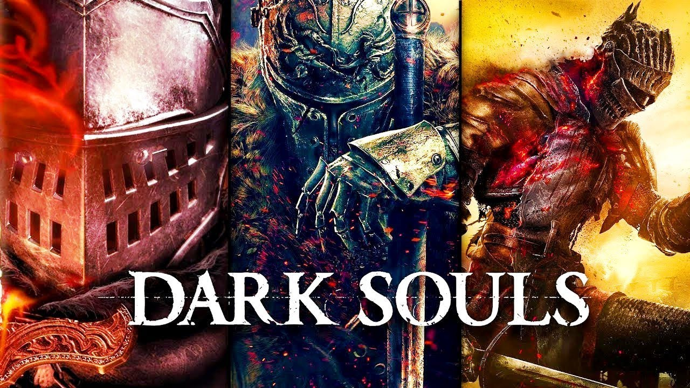

Dark Souls
Dark Souls é um jogo eletrônico de RPG de ação desenvolvido pela FromSoftware e publicado pela Namco Bandai Games. Lançado originalmente em setembro de 2011 para PlayStation 3 e Xbox 360, é um sucessor espiritual de Demon's Souls e a segundo título da série Souls.
Um relançamento para Microsoft Windows foi realizado em agosto de 2012, com conteúdos adicionais não presentes em suas versões originais. Em outubro de 2012, um novo conteúdo para download foi disponibilizado para a versão de consoles, sob o subtítulo Artorias of the Abyss.
História
Após dar um fim à Era dos Dragões, a Primeira Chama, esta utilizada pelos fundadores da Era do Fogo, começou a se apagar. Amaldiçoados pelo desequilíbrio do mundo, os seres criados pelo fogo passaram a apresentar uma deterioração em seus corpos.
Marcados pelo Darksign ou marca nega, a responsabilidade de manter a chama acesa passou a ser deles. Os chamados Hollows atingiam um estado onde pioravam com o tempo e, em situações onde provavelmente estariam mortos, acabaram sobrevivendo.
Os jogadores assumem o papel de um personagem conhecido como “Chosen Undead”, e segundo as lendas, ele dará um fim à maldição capaz de desafiar a morte.
Jogabilidade
O sistema de jogabilidade apresenta-se em terceira pessoa e com foco em combates estratégicos e dinâmicos, inseridos em uma íngreme curva de dificuldade, característica mais marcante da série. O sistema de progressão baseia-se na tradicional progressão de atributos, que variam desde força à inteligência, estamina e fé, dentre outros. Em sua jornada, o jogador encontrará ambientes diversos, como masmorras, fortalezas, cemitérios, lugares fantásticos, complementados por um game design circular, com a interconexão das mais diversas áreas em pontos específicos da narrativa. O sistema online preza pela interação entre jogadores, seja através de dicas in-game sobre os desafios existentes, combate entre jogadores e cooperação para completar determinados pontos do game.

Recepção da crítica
Dark Souls foi aclamado pela critica desde seu lançamento, com elogios principalmente a complexidade de seu combate e jogabilidade, level design e sua história e ambientação. No site Game Rankings, as versões de PS3 e Xbox 360 possuem 89% de aprovação em críticas agregadas, indicando aclamação universal.
No entanto, a dificuldade do jogo recebeu críticas mistas, com alguns criticando-o por ser implacável demais. A versão original do jogo para Windows foi menos bem recebida, com críticas direcionadas a vários problemas técnicos. Em abril de 2013, o jogo havia vendido mais de dois milhões de cópias em todo o mundo. Duas sequências, Dark Souls IIe Dark Souls III, foram lançadas em meados da década de 2010, enquanto uma versão remasterizada, Dark Souls: Remastered, foi lançada em 2018.
Legado
Após o seu lançamento, Dark Souls influenciou profundamente o mundo dos jogos eletrônicos. Sendo responsável pelo surgimento de um novo sub-gênero de jogos denominado "Soulslike", referente a jogos com semelhanças fortes com os jogos da franquia, o game inclusive já foi eleito como o melhor de todos os tempos.